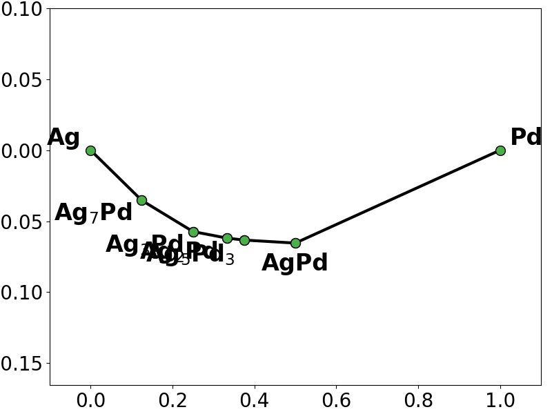

Note
Go to the end to download the full example code
Adding solution constraints#
sparse-lm allows including external solution constraints to the regression objective by exposing the underlying cvxpy problem objects. This is useful to solve regression problems with additional constraints, such as non-negativity.
NOTE: That this functionality does not fully align with the requirements for compatible scikit-learn estimators, meaning that using an estimator with additional constraints added in a ski-kit learn pipeline or model selection is not supported.
To show how to include constraints, we will solve a common problem in materials science: predicting the formation energy of many configurations of an alloy. In such problems, it is usually very important to ensure that the predicted formation energies for “ground-states” (i.e. energies that define the lower convex-hull of the energy vs composition graph) remain on the convex-hull. Similarly, it is often important to ensure that the predicted formation energies that are not “ground-states” in the training data remain above the predicted convex-hull.
The example follows the methodology described in this paper: https://www.nature.com/articles/s41524-017-0032-0
This example requires the pymatgen materials analysis package to be installed to easily plot convex-hulls: https://pymatgen.org/installation.html
The training data used in this example is taken from this tutorial: https://icet.materialsmodeling.org/tutorial.zip for the icet cluster expansion Python package (https://icet.materialsmodeling.org/).

- 
Lasso train RMSE: 0.0028
L2L0 train RMSE: 0.0030
L2L0 with constraings train RMSE: 0.0037
import json
import matplotlib.pyplot as plt
import numpy as np
import pymatgen.analysis.phase_diagram as pd
from pymatgen.core import Structure
from sklearn.linear_model import Lasso
from sklearn.metrics import mean_squared_error
from sparselm.model import L2L0
# load training data
X, y = np.load("corr.npy"), np.load("energy.npy")
# load corresponding structure objects
with open("structures.json") as fp:
structures = json.load(fp)
structures = [Structure.from_dict(s) for s in structures]
# create regressors (the hyperparameters have already been tuned)
lasso_regressor = Lasso(fit_intercept=True, alpha=1.29e-5)
# alpha is the pseudo-l0 norm hyperparameter and eta is the l2-norm hyperparameter
l2l0_regressor = L2L0(
fit_intercept=True,
alpha=3.16e-7,
eta=1.66e-6,
solver="GUROBI",
solver_options={"Threads": 4},
)
# fit models
lasso_regressor.fit(X, y)
l2l0_regressor.fit(X, y)
# create phase diagram entries with training data
training_entries = []
for i, structure in enumerate(structures):
corrs = X[
i
] # in this problem the features of a sample are referred to as correlation vectors
energy = y[i] * len(
structure
) # the energy must be scaled by size to create the phase diagram
entry = pd.PDEntry(
structure.composition,
energy,
attribute={"corrs": corrs, "size": len(structure)},
)
training_entries.append(entry)
# plot the training (true) phase diagram
training_pd = pd.PhaseDiagram(training_entries)
pplotter = pd.PDPlotter(training_pd, backend="matplotlib", show_unstable=0)
pplotter.show(label_unstable=False)
# plot the phase diagram based on the energies predicted by the Lasso fit
lasso_y = lasso_regressor.predict(X)
lasso_pd = pd.PhaseDiagram(
[
pd.PDEntry(s_i.composition, y_i * len(s_i))
for s_i, y_i in zip(structures, lasso_y)
]
)
pplotter = pd.PDPlotter(lasso_pd, backend="matplotlib", show_unstable=0)
pplotter.show(label_unstable=False)
# plot the phase diagram based on the energies predicted by the L2L0 fit
l2l0_y = l2l0_regressor.predict(X)
l2l0_pd = pd.PhaseDiagram(
[
pd.PDEntry(s_i.composition, y_i * len(s_i))
for s_i, y_i in zip(structures, l2l0_y)
]
)
pplotter = pd.PDPlotter(l2l0_pd, backend="matplotlib", show_unstable=0)
pplotter.show(label_unstable=False)
# we notice that both the Lasso fit and the L2L0 fit miss the ground-state Ag5Pd3
# and also add spurious ground-states not present in the training convex hull
# create matrices for two types of contraints to keep the predicted hull unchanged
# 1) keep non-ground states above the hull
# 2) ensure ground-states stay on the hull
# 1) compute the correlation matrix for unstable structures and
# the weighted correlation matrix of the decomposition products
X_unstable = np.zeros(shape=(len(training_pd.unstable_entries), X.shape[1]))
X_decomp = np.zeros_like(X_unstable)
for i, entry in enumerate(training_pd.unstable_entries):
if entry.is_element:
continue
X_unstable[i] = entry.attribute["corrs"]
decomp_entries, ehull = training_pd.get_decomp_and_e_above_hull(entry)
for dentry, amount in decomp_entries.items():
ratio = (
amount
* (entry.composition.num_atoms / dentry.composition.num_atoms)
* dentry.attribute["size"]
/ entry.attribute["size"]
)
X_decomp[i] += ratio * dentry.attribute["corrs"]
# 2) compute the ground-state correlation matrix
# and the weighted correlation matrix of decomposition products if the ground state was not a ground-state
X_stable = np.zeros(shape=(len(training_pd.stable_entries), X.shape[1]))
X_gsdecomp = np.zeros_like(X_stable)
gs_pd = pd.PhaseDiagram(training_pd.stable_entries)
for i, entry in enumerate(gs_pd.stable_entries):
if entry.is_element:
continue
X_stable[i] = entry.attribute["corrs"]
decomp_entries, ehull = gs_pd.get_decomp_and_phase_separation_energy(entry)
for dentry, amount in decomp_entries.items():
ratio = (
amount
* (entry.composition.num_atoms / dentry.composition.num_atoms)
* dentry.attribute["size"]
/ entry.attribute["size"]
)
X_gsdecomp[i] += ratio * dentry.attribute["corrs"]
constrained_regressor = L2L0(
fit_intercept=True,
alpha=3.16e-7,
eta=1.66e-6,
solver="GUROBI",
solver_options={"Threads": 4},
)
# now create the constraints by accessing the underlying cvxpy objects
# if regressor.fit has not been called with the gigen data, we must call generate_problem to generate
# the cvxpy objects that represent the regressino objective
constrained_regressor.generate_problem(X, y)
J = (
constrained_regressor.canonicals_.beta
) # this is the cvxpy variable representing the coefficients
# 1) add constraint to keep unstable structures above hull, ie no new ground states
epsilon = 0.0005 # solutions will be very sensitive to the size of this margin
constrained_regressor.add_constraints([X_unstable @ J >= X_decomp @ J + epsilon])
# 2) add constraint to keep all ground-states on the hull
epsilon = 1e-6
constrained_regressor.add_constraints([X_stable @ J <= X_gsdecomp @ J - epsilon])
# fit the constrained regressor
constrained_regressor.fit(X, y)
# look at the phase diagram based on the energies predicted by the L2L0 fit
l2l0c_y = constrained_regressor.predict(X)
constrained_pd = pd.PhaseDiagram(
[
pd.PDEntry(s_i.composition, y_i * len(s_i))
for s_i, y_i in zip(structures, l2l0c_y)
]
)
pplotter = pd.PDPlotter(constrained_pd, backend="matplotlib", show_unstable=0)
pplotter.show(label_unstable=False)
# the constraints now force the fitted model to respect the trainind convex-hull
# Plot the different estimated coefficients
fig, ax = plt.subplots()
ax.plot(lasso_regressor.coef_[1:])
ax.plot(l2l0_regressor.coef_[1:])
ax.plot(constrained_regressor.coef_[1:])
ax.set_xlabel("covariate index")
ax.set_ylabel("coefficient value")
ax.legend(["lasso", "l2l0", "l2l0 constrained"])
fig.show()
# print the resulting training RMSE from the different fits
lasso_rmse = np.sqrt(mean_squared_error(y, lasso_regressor.predict(X)))
l2l0_rmse = np.sqrt(mean_squared_error(y, l2l0_regressor.predict(X)))
l2l0c_rmse = np.sqrt(mean_squared_error(y, constrained_regressor.predict(X)))
print(f"Lasso train RMSE: {lasso_rmse:.4f}")
print(f"L2L0 train RMSE: {l2l0_rmse:.4f}")
print(f"L2L0 with constraings train RMSE: {l2l0c_rmse:.4f}")
Total running time of the script: ( 0 minutes 3.720 seconds)